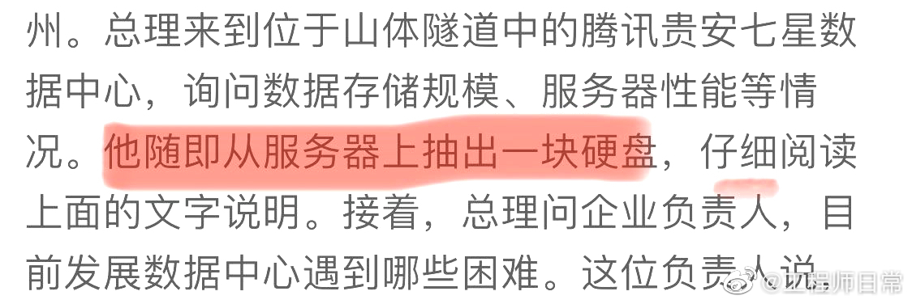
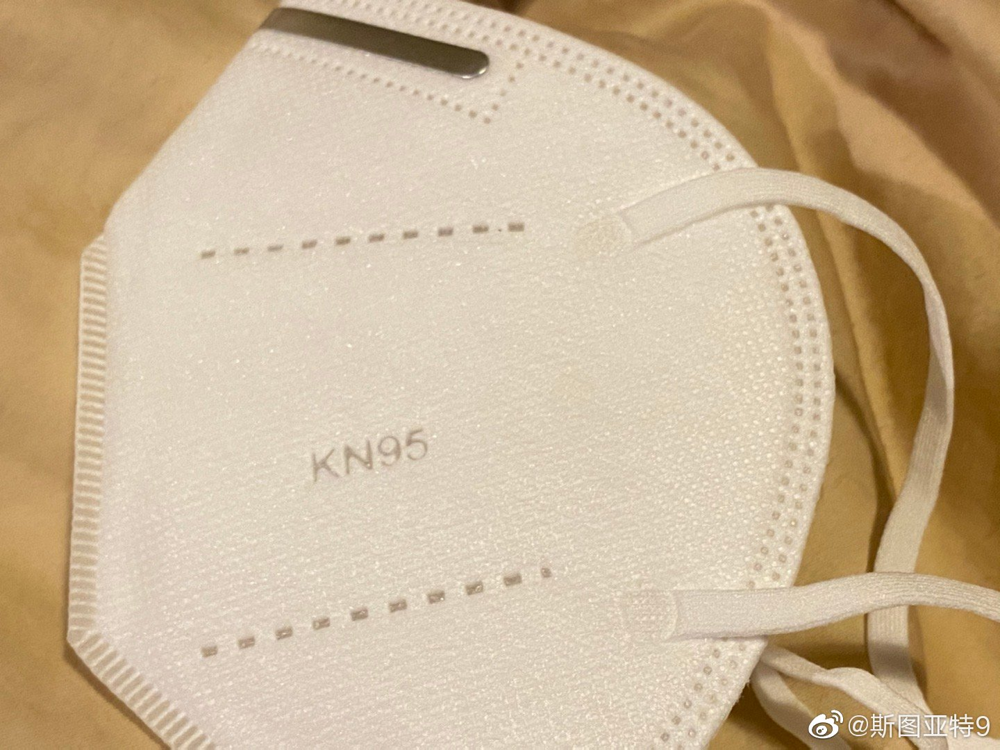
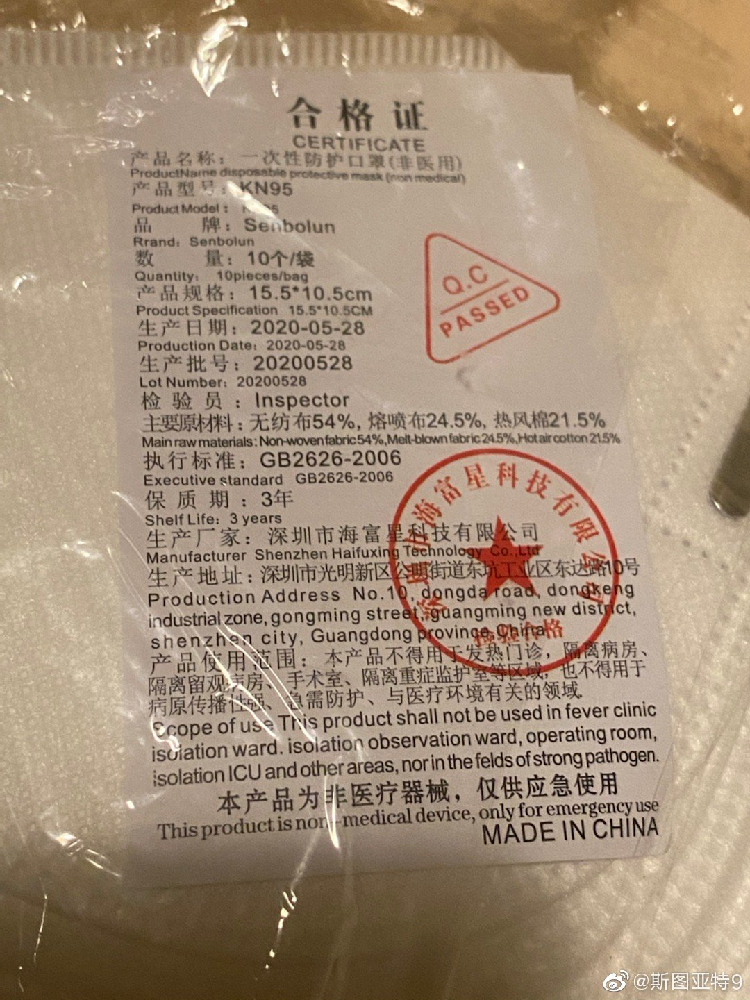

现在都全面ReedSolomon了，还怕这个？//@Apache9:分布式文件系统不怕这个，你别同时抽三块不同机器的就行//@henryma_t: //@_杨肉_: 。。。@工程师日常:总理教你做RAID 李克强贵州考察数据中心释放什么信号？ 
我搜索了一下这家公司，发现这家公司是做瑜伽垫的@斯图亚特9:从亚马逊订的号称KN95的口罩终于一个多月后寄到了。目测完全达不到KN95标准。不说别的，这个挂在耳朵上的挂带就不可能达到密封要求。但号称执行的是GB2626-2006标准。骗人的吗？当然本来也不确定有机会用，只不过偶然看到亚马逊上有非常便宜的货，好奇买来看看。感觉白费了。 
从亚马逊订的号称KN95的口罩终于一个多月后寄到了。目测完全达不到KN95标准。不说别的，这个挂在耳朵上的挂带就不可能达到密封要求。但号称执行的是GB2626-2006标准。骗人的吗？当然本来也不确定有机会用，只不过偶然看到亚马逊上有非常便宜的货，好奇买来看看。感觉白费了。
大西洋月刊一篇文章分析认为南方各州疫情极度恶化的一个原因是天气太热，人们都在室内活动。而室内社交活动的扩散危险远高于户外社交活动。这和为什么冬天是流感季类似，只不过把太冷换成太热。所以文章观点是，关闭海滩、限制草坪活动之类是适得其反的。人们没法在室外社交，有一些想办法到室内聚会去了，适得其反。
…… //@小五在米兰:日常吹爆前米兰球员@LaLiga西甲联赛:活久见！前锋扑出门将射门【奥坎波斯进球+扑救全过程】#西甲第34轮# 奥坎波斯帮助@塞维利亚足球俱乐部 打入制胜球后，客串门将扑出埃瓦尔门将的抢点射门，下地速度可以说是非常快了！ #每日西甲赛不停# LaLiga西甲联赛的微博视频 5万次播放 02:09
转发微博@洋葱故事会:【网友不讨论高考数学题是因为文化水平高】有些人说，网友文化水平低，只敢讨论高考作文，不敢讨论数学最后大题。这种观点完全错误，网友这么做恰恰是因为文化水平很高，因为他们知道高考作文题60分，数学最后大题最多15分，大家都很忙，时间有限的情况下做一下高考题，肯定从分值最大的入手。

 李克强贵州考察数据中心释放什么信号？
李克强贵州考察数据中心释放什么信号？